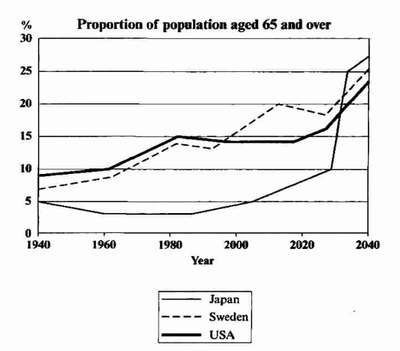

You should spend about 20 minutes on this task.
The graph below shows the proportion of the population aged 65 and over between 1940 and 2040 in three different countries.
Summarise the information by selecting and reporting the main features and make comparisons where relevant.
Write at least 150 words.

The line graph compares the percentage of people aged 65 or more in three countries over a period of 100 years.
It is clear that the proportion of elderly people increases in each country between 1940 and 2040. Japan is expected to see the most dramatic changes in its elderly population.
In 1940, around 9% of Americans were aged 65 or over, compared to about 7% of Swedish people and 5% of Japanese people. The proportions of elderly people in the USA and Sweden rose gradually over the next 50 years, reaching just under 15% in 1990. By contrast, the figures for Japan remained below 5% until the early 2000s.
Looking into the future, a sudden increase in the percentage of elderly people is predicted for Japan, with a jump of over 15% in just 10 years from 2030 to 2040. By 2040, it is thought that around 27% of the Japanese population will be 65 years old or more, while the figures for Sweden and the USA will be slightly lower, at about 25% and 23% respectively.
(178 words, band 9)
You should spend about 40 minutes on this task.
The percentage of overweight children in western society has increased by almost 20% in the last ten years.
Discuss the causes and effects of this disturbing trend.
Give reasons for your answer and include any relevant examples from your own knowledge or experience.
Write at least 250 words.
There is no doubt that overweight children’s percentages rose by twenty percent in western world. There are several factors, which played role. Also, there are some effects of being overweight.
On of the major factor that has contributed to increase in children’s weight is unhealthy food. Number of children eating unhealthy food is on the rise, and number of increasing fast food restaurants are responsible for that.These restaurant sell tasty food to attract children but these food contain unhealthy ingredients, for example, fat and salt. Secondly, some advertisements that encourage children to eat unhealthy diet. Lastly, children do not give time to out door activities because they spend more time watching television or playing games on computers at home, which led to sedentary lifestyle. As a result, children become overweight.
Overweight children are prone to many problems. They are more likely to suffer from chronic diseases like high blood pressure and diabetes, during their late age of life. These conditions are life threatening. In addition, these children can be tortured at school by peers, which can have effects on their mental health like stress, anxiety and insomnia. These problems, in turn, often result in lower productivity at school. Futhermore, they are less likely to be selected for school’s sport team because selection team might concern about their fitness.
In conclusion,factors like poor diet, sedentary lifestyle because of advance in technology has led to increase in overweight children, and these may cause serious physiological and psychological problems to children health.